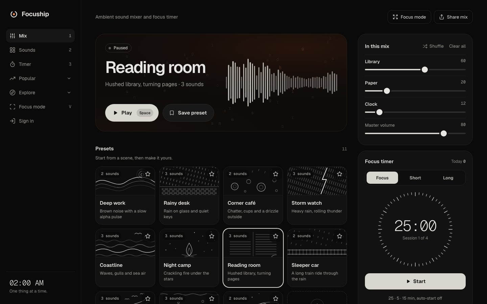
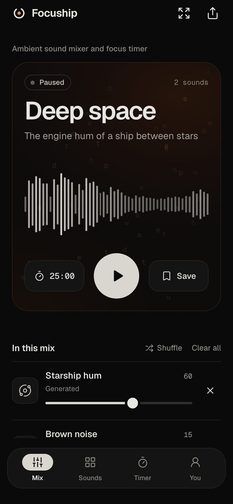

An Ambient Sound Mixer PWA and OAuth MCP Server in 8 Days
Between 20 and 28 October 2026, I architected and built Focuship: a mobile-first ambient sound mixer and focus timer that runs offline as a Next.js PWA, paired with a custom Laravel backend and a Model Context Protocol (MCP) server for AI assistants. I authored all 47 commits on the repository, pairing with Claude Code across 36 commits and 5 merged pull requests.
My role
Architect & developer, paired with Claude Code
Team
1 engineer, 1 monorepo (Next.js + Laravel)
Window
20 to 28 Oct 2026
Milestone
Production launch on focuship.app
Stack
Next.js 15, Web Audio API, TypeScript, Laravel 11, Cloudflare, Playwright, Pest


Focuship running in production at focuship.app on desktop and a mobile viewport. Captured 8 Nov 2026.
The days 20 to 28 Oct
What the eight days looked like
The development unfolded in two planned milestones. The first milestone (20 to 22 October) delivered the client application: a high-performance Next.js PWA deployed to Cloudflare's edge with 64 audio sources, programmatic SEO landing pages, research guides, and a complete dark-ember visual redesign. The second milestone (22 to 28 October) built the backend infrastructure: a dedicated Laravel API providing Sanctum session authentication, account synchronization, and an OAuth 2.1 Model Context Protocol server for AI assistants.
My commits (47)Team commits (0)
Daily non-merge commits on main. All 47 commits were authored by me, with 36 commits co-authored with Claude Code.
47 of 47commits on main
36 of 47pair commits with Claude Code
5 of 5merged pull requests
38 of 38GitHub issues delivered
5 of 5architectural decisions (ADRs)
The brief before 20 Oct
The brief
The ambition was to create a focused, distraction-free ambient mixer and Pomodoro timer that users could live in every working day. It had to satisfy strict engineering constraints from the start:
Zero-latency audio playback: audio must start synchronously on user interaction, loop without audible seams or clicks, and survive mobile lockscreens and backgrounding.
Static export architecture: the app shell must prerender to plain static HTML and run at Cloudflare's edge with zero server rendering costs.
True offline capability: sound files fetched once must play from local cache without network requests, installable as a native-feeling Progressive Web App.
No login required: guests must enjoy the entire mixer, timer, presets, and share links without creating an account; accounts should remain strictly optional.
Verifiable content: research guides on noise and focus must cite peer-reviewed academic literature with verified DOIs, making zero unsubstantiated medical claims.
Architecture 20 to 23 Oct
System architecture: edge frontend & Laravel backend
Focuship operates as a decoupled system. The client frontend is a statically exported Next.js application distributed across Cloudflare's global edge network. State management uses a module-level external store read through useSyncExternalStore, while audio runs in a dedicated Web Audio engine using dual-deck crossfading. For signed-in listeners and AI agents, the frontend connects to a Laravel 11 API hosted on cPanel behind Cloudflare.
The edge Worker serves static assets and offline caches; the Laravel API unifies account data and AI agent access.
Static Export Seam
Builds to out/ with output: 'export'. No server-side runtime headers, redirects, or dynamic SSR.
Dual-Deck Audio Engine
Each recording utilizes two alternating HTML5 audio elements crossfading 1.5 seconds before boundary edges to guarantee click-free seamless looping.
Unified Library
App\Account\Library acts as the single point of truth in Laravel for presets, caps, and settings, preventing drift between the web API and MCP tools.
Day one 20 Oct
Day one: zero-latency audio and PWA foundation
On 20 October, the project grew from an initial idea into a fully working PWA running on Cloudflare. The first sprint established the audio pipeline, keyboard navigation, and the sound catalogue.
14:43Initial build of Let Me Focus: mobile-first ambient mixer PWA
16:16Fullscreen mode, keyboard shortcuts (V/F), and Safari audio session claim
16:52Static deployment pipeline to Cloudflare
22:18Rebrand to Focuship with MIT license and per-page offline caching
22:39Custom sci-fi drone synthesizer and Deep space preset
Synthesized Drone
A real-time Web Audio graph combining detuned low-frequency oscillators with an LFO-swept low-pass filter and filtered brown noise.
Readable Share Links
Share URLs serialize the mix state in plain text (?mix=rain-on-window:60,keyboard:30), avoiding opaque base64 hashes.
SEO & guides 20 Oct
Programmatic pages with strict quality gates
Instead of generating hundreds of thin spam pages, Focuship enforces a programmatic quality gate in src/lib/pages.ts. A landing page is only indexable if it provides a unique audio configuration, full editorial copy, FAQs, and validated cross-links. Pages that fail the gate are built for functional use but receive noindex and remain excluded from sitemap.xml and llms.txt.
Route pattern
Template
Quality gate criteria
/sounds/[slug]
Single sound landing
Curated hero copy, preloaded layer, minimum word count, FAQ
/timer/[duration]
Preset timer duration
Valid countdown bounds, task advice, related preset mixes
Distinct multi-layer balance, verified layer presence in catalogue
/guides/[slug]
Evidence-based article
Peer-reviewed research citations with DOIs; manual editorial review
App shell 21 Oct
Refactoring navigation to native-feeling routes
PR #20 resolved a core user experience friction: tab switches originally changed local component state without modifying the browser URL. Navigating between Mix, Sounds, Timer, and About was refactored to real push-state routes (/, /sounds, /timer, /about) without triggering page reloads or interrupting playback.
Continuous playback: the Web Audio engine lives in a persistent module singleton outside Next.js's component tree, preserving audio state across route transitions.
5-slot bottom bar: a native-feeling mobile navigation bar with an elevated center play/pause button and touch feedback.
Swipe-to-dismiss sheets: bottom action sheets on mobile support gestural flicking and dismissals matching native platform physics.
Keyboard 1-2-3 shortcuts: instantaneous tab navigation with keys 1, 2, and 3, automatically suspended when typing in the search bar.
Visual identity 22 Oct
The ember glow: dark surfaces and warm contrast
PR #23 replaced the initial utility appearance with Focuship's dark visual identity. Grounded in near-black surfaces (#0a0a0a), warm hairlines (#1f1f1f), and an orange ember focal point (#f08a4b), the interface minimizes visual fatigue during prolonged deep work sessions.
The Mark
An open timer ring enclosing an ember dot, rendered dynamically in SVG, canvas app icons, and Open Graph card generators.
Pill Controls
High-contrast soft-white pills with dark ink glyphs for primary play/save actions, ensuring tap targets exceed 44px.
Instant Search
Pressing / opens and focuses the sound catalogue search input from any page, returning focus cleanly on Escape.
API & MCP 22 to 23 Oct
The backend: A dedicated Laravel API and OAuth MCP server
Focuship was engineered from the start to support both human listeners and AI assistants. While the static Next.js PWA runs autonomously at the edge, accounts and assistant tooling required a dedicated backend. An external BaaS was avoided because the Model Context Protocol requires RFC 8414 dynamic client registration, PKCE OAuth token issuance, and unified domain validation. As recorded in ADR 0001, I implemented a custom Laravel 11 API in api/ that powers both web session auth and the MCP server through a single business logic layer.
The MCP server builds and validates sound mixes, handing off a share link to the browser so audio starts strictly on a user gesture.
Sanctum Session Auth
The web client authenticates via stateful httpOnly cookie sessions scoped to .focuship.app, ensuring tokens are never stored in localStorage (ADR 0003).
Passport OAuth 2.1 MCP
The MCP server at api.focuship.app/mcp implements RFC 8414 OAuth 2.1 discovery with PKCE, exposing 16 tools, 2 resources, and 1 prompt (ADR 0004).
Single Catalogue Source
Frontend TypeScript remains the canonical source of truth for all 64 sounds; npm run export:catalog writes catalog.json for Laravel, and CI fails if they drift (ADR 0002).
Verification 22 Oct
A four-layer test harness with zero hydration errors
Reliability is verified across four distinct testing layers. PR #42 established 660 automated tests, running unit, component, static export, end-to-end, and database API suites before every edge deployment.
Before PR #42After PR #42
Frontend test coverage (Vitest + Playwright)55 tests → 478 tests
Total test suite (Frontend + Laravel Pest)55 tests → 660 tests
0 tests175 tests350 tests525 tests700 tests
Automated test counts before and after the Laravel API and test harness migration recorded in PR #42.
Layer
Framework
Target scope
Tests passing
Unit & Component
Vitest + React Testing Library
Store actions, share encoding, UI components, audio stubs
82
Static Export Verification
Vitest (Node)
Prerendered HTML in out/, JSON-LD, sitemap, brand rules
Laravel trusts forwarding headers (X-Forwarded-For, X-Forwarded-Proto) strictly from Cloudflare's published CIDR blocks, preventing origin IP spoofing (ADR 0005).
Turnstile-Guarded Email Sign-In
Passwordless 6-digit login codes require a fresh Cloudflare Turnstile token on every submission, sent via Brevo SMTP to eliminate bot abuse.
MariaDB Migration Safeguards
Explicit timestamp defaults and InnoDB engine declarations guarantee error-free migrations on shared cPanel hosts with 1000-byte key limitations.
Hydration Guardrails
CI Playwright fixtures intercept console errors and immediately fail the build if React logs a hydration mismatch on production prerendered pages.
Collaboration
Architecting with Claude Code
Every line of code and architecture was directed by me, using Claude Code as a fast pair-programming companion. Clear seams and written architectural decision records allowed rapid exploration without losing system coherence.
What I architected & directed
Web Audio engine design with dual-deck crossfade looping
Self-hosted Laravel API architecture and RFC 8414 MCP integration
Sanctum cookie session and Passport OAuth 2.1 security model
Visual identity: ember glow theme and token hierarchy
Quality gates for programmatic SEO and evidence-based guides
cPanel hosting architecture, SSH deploy pipeline, and MariaDB fixes
What Claude Code drafted & implemented
Programmatic page registry and route templates (PR #19)
App shell route navigation and gesture dismissals (PR #20)
OAuth social sign-in and Turnstile email-code flows (PR #22)
Visual redesign token translation and component refinement (PR #23)
Laravel MCP tool implementations and Pest test matrix (PR #42)
Static export test suites verifying HTML and metadata
Where it stands November 2026
Where it stands today
Live in production: deployed at focuship.app with edge distribution and zero origin compute fees.
64 ambient audio sources: 56 gapless field recordings, continuous synthetic noise generators, and an original real-time starship drone.
Live MCP Server: operational at api.focuship.app/mcp, enabling Claude, Cursor, and custom agents to build and share focus soundscapes.
Rock-solid reliability: 660 automated tests passing across 4 suites with 0 console or hydration warnings.